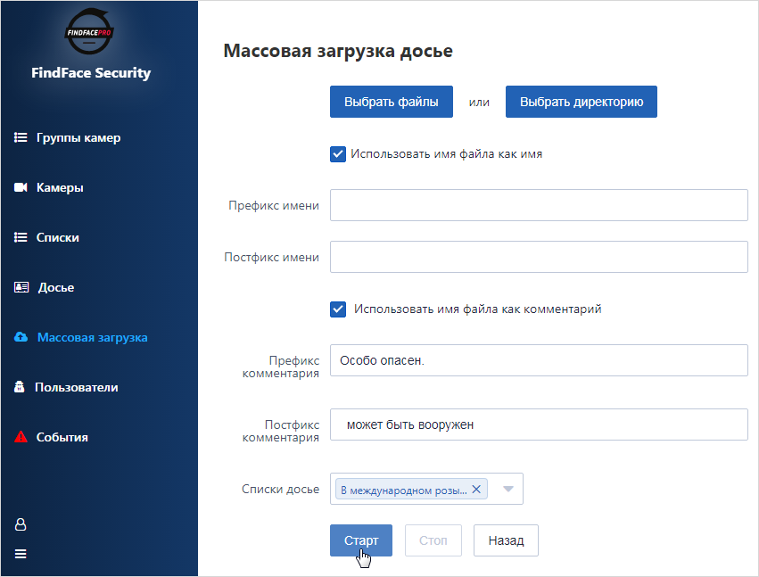

Управление базой данных посетителей¶
На каждого нежелательного посетителя и VIP-гостя в FindFace Security создается досье, содержащее одну или несколько фотографий. Досье классифицируется по принадлежности к тому или иному списку, например, к черному или белому в самом простом случае. Вы можете создать несколько списков, например, в зависимости от уровня опасности или, наоборот, статуса посетителя.
Совет
Для автоматического создания большого количества досье используйте функционал пакетной загрузки фотографий.
В этой главе:
Списки досье¶
Создание списка¶
Для создания списка досье выполните следующие действия:
В веб-интерфейсе перейдите на вкладку Списки.

Нажмите на кнопку Создать.
В палитре Метка выберите цвет, который будет использоваться в событиях распознавания посетителей из данного списка. Правильно выбранный цвет повышает быстроту реагирования оператора на событие.
Введите название списка.
Поставьте флажок Требовать подтверждение, если для данного списка оператор должен в обязательном порядке подтвердить принятие события.
При необходимости включите звук при появлении события для данного списка.
Поставьте флажок Активный.
Нажмите на кнопку Сохранить.
{kind=link}
Деактивация или удаление списка¶
Для того чтобы деактивировать или удалить список из FindFace Security, выполните следующие действия:
- Щелкните по имени списка в таблице.
- Для деактивации снимите флажок Активный. Нажмите на кнопку Сохранить.
- Для удаления нажмите на кнопку Удалить.
Просмотр досье из списка¶
Все созданные в FindFace Security досье отображаются на вкладке Досье. Используйте фильтр Списки досье, чтобы отфильтровать досье по спискам.
Создание досье вручную¶
Для создания досье вручную выполните следующие действия:
В веб-интерфейсе перейдите на вкладку Досье.
Нажмите на кнопку Создать.
Добавьте фотографию и введите имя посетителя. При необходимости добавьте комментарий.
Важно
Фотография должна отвечать следующим требованиям:
- Содержать лицо и притом только одно.
- Лицо должно быть надлежащего качества, т. е. в близком к анфас положении.
При несоответствии фотографии одному или нескольким требованиям будет выведено сообщение с описанием ошибки.

Из раскрывающегося списка Списки досье выберите список, в который следует добавить досье.
Нажмите на кнопку Сохранить.
{kind=link}
Пакетная загрузка фотографий¶
Для автоматического создания большого количества досье используйте функционал пакетной загрузки фотографий. Выполните следующие действия:
В веб-интерфейсе перейдите на вкладку Массовая загрузка.
Выберите фотографии для загрузки пофайлово или укажите папку с фотографиями.
Имена файлов с фотографиями можно использовать как основу для имен и/или комментариев в создаваемых досье. Выберите нужный вариант(ы). Затем настройте правило формирования имени и/или комментария, добавив пользовательский префикс и/или постфикс к имени файла.
Совет
Во избежание слияние 3-х слов в одно, используйте символ подчеркивания или пробел в префиксе и постфиксе.
Из раскрывающегося списка Списки досье выберите список, в который следует добавить создаваемые досье.
Для запуска пакетного создания досье нажмите на кнопку Старт.